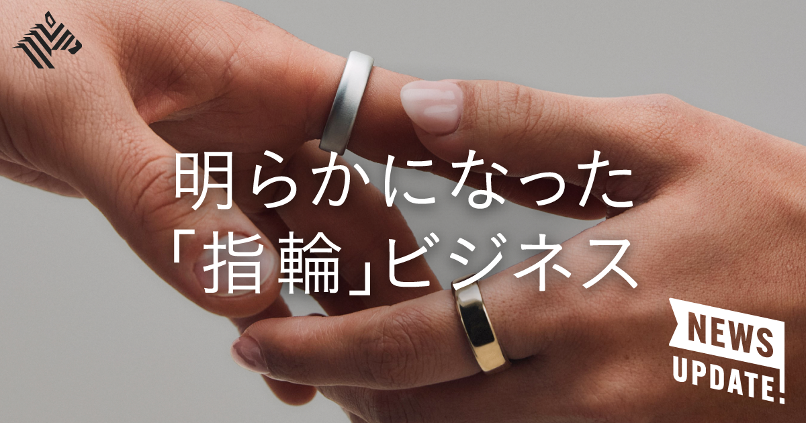
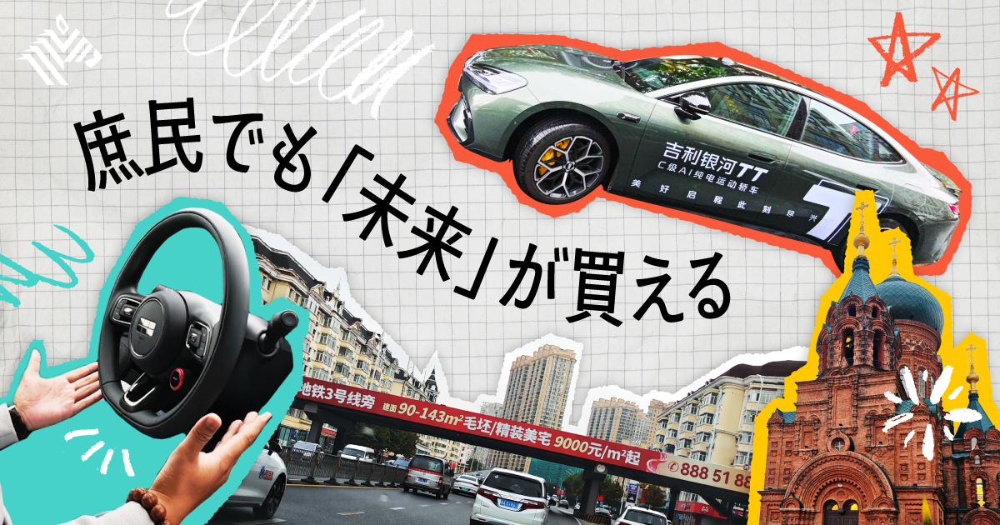
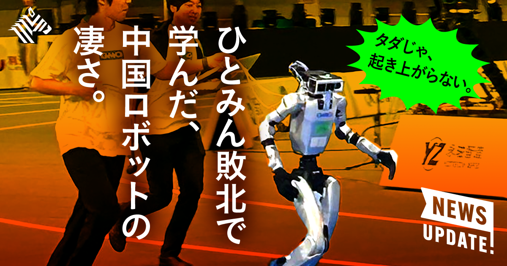
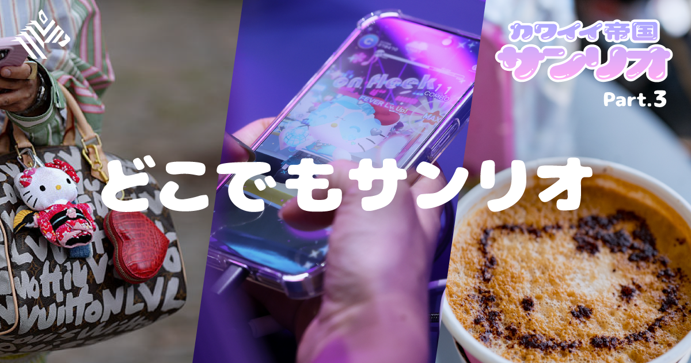

01【上場延期】スマートリング「Oura」すでに利益100億円超
発行日時：2026年10月7日 05:30 JST

あなたに関係ありそうな理由
製品の販売価格だけでなく、継続課金、解約率、提携先を合わせて見ると、ハードウェア事業の強さをより具体的に判断できます。
概要
スマートリングを手がけるOuraは、9月29日に予定していた上場を延期した。記事によると、上場時の想定企業価値は最大156億ドル、日本円で約2兆4000億円だったが、会社に入る新規資金は約620万ドル、約10億円にとどまり、その大半は既存株主の売却だった。上場延期を見ると成長の陰りにも見えるが、記事が注目するのは、Ouraがすでに収益を出す事業モデルを持っている点である。投資判断では、資金調達の規模と、事業が利益を生むかを分けて読む必要がある。
Ouraのリングは5万〜8万円台で、利用には月額1000円弱のサブスクリプションが必要になる。記事では、1年後の解約率は15％、有料会員は500万人、世界56カ国で販売し、スマートリング市場で70％のシェアを持つとする。リングを一度売って終えるのではなく、睡眠や回復状態などのデータを継続して見せることで、毎月の収入と利用者との接点を積み上げる設計だ。表示コメントでも、絶対的な測定精度だけでなく、長期の変化を見られるデータやアルゴリズムの価値が論点になった。
2025年10月から2026年6月までの9カ月間の売上高は12億ドルで前年同期比74％増、営業利益は7100万ドルで18％増だった。直近1年では約360万個のリングを売ったという。Ouraは米テキサス州での自社生産を進め、国防総省向けの需要も見込む。記事は、年会費のない競合との差別化、保険会社・企業・医療分野との提携、肥満症治療薬GLP-1の利用支援などを次の成長材料として挙げる。装着型端末の競争は、端末単体の機能だけでなく、利用場面をどこまで広げられるかへ移っている。
一方で、上場延期は投資家が評価や株式の売り出し条件を慎重に見ていることも示す。記事には、既存株主の売却比率が高いこと、ベンチャーキャピタルのForerunnerが売却株式の約8割を占める見通しも記されている。事業が伸びていることと、どの価格で株式を引き受けるかは別の判断である。コメントには、健康データを継続して使う理由をどこまで強くできるか、医療との連携をどう実用化するかを見たいという意見もあった。今後は、会員数だけでなく、解約率と提携による利用価値の変化を追いたい。
ハードと継続課金を組み合わせる事業では、販売台数よりも、利用者がデータを見続ける理由と、その結果として生まれる収益の質を確かめることが重要になる。
仕事や会話で使える一言
「端末の売上だけでなく、解約率と継続して使う理由まで見ると、事業の強さが見えますね。」
NewsPicks原文を読む
02【中国ルポ】地方ですらクルマの進化が未来すぎて正直凹んだ
発行日時：2026年10月7日 05:30 JST

あなたに関係ありそうな理由
導入価格、性能、使う時間の変化を一緒に見ると、移動や設備の競争がどこで起きているかを具体的に考えられます。
概要
中国東北部の哈爾浜で、記事の筆者は一般の販売店に置かれた吉利汽車「Galaxy TT」と、華為技術と賽力斯のブランド「AITO M9」を試乗した。特別な展示車ではなく、地方都市の日常の店頭で先進運転支援を体験できることが記事の出発点だ。Galaxy TTは14万元、日本円で約320万円とされ、テスラの自動運転支援付きモデル3のおよそ半額でありながら、運転支援、航続距離、充電時間を売りにする。中国の自動車競争が、都市部の高級車に限らないことが分かる。
Galaxy TTは航続距離640キロ、10分の充電で約400キロ走行でき、0〜100キロ加速は6.5秒という。記事によると、カメラ11基、超音波センサー12基、ミリ波レーダー3基、LiDAR1基の計27個のセンサーを備える。吉利は、交通の状況を学ぶ「ワールドモデル」を使うと説明している。2026年上半期には、吉利が中国市場でBYDを上回ったとも伝える。価格を抑えながら装備を積み、ソフトウエアの学習まで競う構図は、日本の利用者にとっても無関係ではない。
AITO M9は約1100万円の大型SUVで、華為の運転支援を搭載する。記事は走行時の滑らかさに触れ、同社が2025年4月に急ブレーキの発生率を30％下げたと発表したことも紹介する。高価格帯では、運転の代行度合いだけでなく、移動中の時間を車内でどう過ごせるかが商品価値になりつつある。助手席や後席に座る時間、画面や音声の使い方、移動の疲れまでを含めた体験で競うという見方である。
表示コメントには、複雑な中国の交通環境で育った運転支援の実力、価格と体験を両立させる開発の速さを評価する意見があった。一方で、耐久性や顧客の実際の反応を継続して見るべきだという指摘もある。記事は、日本メーカーが速度とコストの両面で中国勢への危機感を強めていると伝えるが、単純な国籍の比較ではない。何を標準装備にし、データをどう改良へ戻し、使う人の時間をどう変えるかという事業設計の差が問われている。
今後確認したいのは、カタログ上の航続距離だけではない。安全支援が日常でどこまで自然に使われるか、購入後の保守と更新がどう提供されるかが、競争力を測る材料になる。
仕事や会話で使える一言
「価格ではなく、移動中の時間をどう変えるかまで商品にしている点が印象的ですね。」
NewsPicks原文を読む
03【衝撃】GMOが語る、最強のヒューマノイド企業の秘密
発行日時：2026年10月7日 05:30 JST

あなたに関係ありそうな理由
ロボットやAIの導入では、性能の高さだけでなく、価格、保守、任せる作業を分けて検証することが実装の出発点になります。
概要
GMOインターネットグループが導入した中国Unitree Roboticsのヒューマノイド「G1」は、身長132センチ、重さ35キロ、価格は1台1万3500ドル、日本円で約200万円と紹介される。GMOでは「Hitomin」と呼び、開発や実証に使っている。記事がUnitreeの強みとして挙げるのは、機体を軽くして価格を抑え、部品を交換しやすいモジュール構造にしたことだ。壊れにくいものを長く作る日本型の発想とは異なり、修理や更新を前提にした設計が、導入のしやすさにつながる。
Unitreeは垂直統合を進め、世界へ開いた開発環境を用意している。記事では、USB-CやLANで接続でき、コードも世界と共有できることが説明される。GMO側は公開されている資源を活用し、モーションキャプチャーと約5億回のシミュレーション学習、1日程度の強化学習で動作を作ったという。ゼロから基盤技術を抱え込まなくても、利用可能な機体と学習環境を組み合わせれば、現場に合わせた検証へ早く入れるという事例になっている。
ただし、実際の仕事へ置き換えるには課題が残る。記事は、発熱、手や道具の扱い、同じ作業を長く繰り返す信頼性を挙げる。GMOは羽田空港で、日本航空と貨物の積み下ろしや清掃の実証を進めている。競技会に出場した後、採用応募が6倍になったというエピソードもあり、ロボットは作業効率だけでなく、会社がどんな技術に取り組むかを伝える役割も持つ。とはいえ、話題性を導入効果と混同しないことが必要だ。
コメントでは、人型にする必然性、熱や手先の安全性、故障時に交換することのコストと環境負荷が論点になった。人のいる場所で使う以上、転倒や接触のリスク、責任の所在も具体的に確認しなければならない。記事にあるUnitreeの上場後の時価総額の大きさは市場の期待を示すが、各現場で投資回収ができるかとは別問題である。先に作業を細かく分け、どこを人から機械へ渡せるかを確かめる段階が重要になる。
ヒューマノイドを導入する判断では、「人に似ているか」より、対象作業に必要な安全性、実際の稼働時間、復旧のしやすさを導入前に同じ条件で丁寧に比べたい。
仕事や会話で使える一言
「人型ロボットは、価格より先に、どの作業なら安全に繰り返せるかを見極めたいですね。」
NewsPicks原文を読む
04【核心】サンリオは「令和のディズニー」になるのか
発行日時：2026年10月7日 05:30 JST

あなたに関係ありそうな理由
ブランドを長く育てるには、販売やライセンスだけでなく、顧客との接点とデータを自社でどこまで持てるかを考える必要があります。
概要
サンリオは、キャラクターを商品やライセンスだけでなく、ゲームを通じて生活の中へ入り込ませようとしている。記事は、2023年の日本コンテンツの海外売上が約5兆8000億円で10年前の約3倍になった背景に触れ、ハローキティ関連の累計売上が約800億ドル、約12兆円に達したと紹介する。2026年3月期のサンリオの売上高は1940億円、ロイヤルティ収入は964億円で、国内ライセンス事業の利益率は88.8％だった。強い既存事業を持つ企業が、あえて収益性の異なるゲームへ踏み出す理由が焦点になる。
記事が使うのは「Sanrio Time」という考え方だ。キャラクターを身近に置いたり、作品世界へ深く入ったりする時間を測り、前者を「共にいる時間」、後者を「没入する時間」と呼ぶ。サンリオは、共にいる時間を1644億時間、没入する時間を5億時間と見積もる。ゲームや映像を持つ企業は、販売以外の接点を増やし、ファンが戻ってくる場所をつくってきた。ロブロックスの2026年1〜3月の一日当たり利用者数が1億3200万人、総利用時間が310億時間だったという数字も、接点の大きさを示す材料として挙げられる。
サンリオは2026年4月にゲーム部門を設け、3年間で10タイトルを出す計画だ。最初の「Partyland」は10月29日の公開を予定し、1作あたり約30億円を投じるという。ゲーム事業は、ライセンスより利益率が低く、記事が例に挙げるカプコンのゲーム事業の利益率は48.9％である。それでも、遊ぶ場を自社で持てば、外部プラットフォームに依存しすぎず、キャラクターへの入口を広げられる。短期の採算だけでは説明しきれない投資である。
記事は、共通IDや「オモイデバッジ」によって、ゲーム内での行動を次の体験へつなげる構想も伝える。映像や映画との連携、北米の売上構成比を2035年までに4％から10％へ高める目標も、海外でファンとの関係を太くする狙いと重なる。コメントでは、ゲームを通じて顧客との直接の関係を持てる点、物語性が弱いとされるキャラクターをどう補うかが論点になった。アイコンの自由さを生かすか、世界観を深めるかは、今後の作品次第になる。
ライセンスの強さに頼るだけでなく、ファンが集まり、記録が残り、次の接点へ進める場所を自社で持てるかが、IPの持続性を左右しそうだ。
仕事や会話で使える一言
「売上を増やすだけでなく、また戻って来たくなる接点を自社で持つ戦略ですね。」
NewsPicks原文を読む
05生き残るリーダーは「判断を急がない」
発行日時：2026年10月7日 05:20 JST
あなたに関係ありそうな理由
任せる範囲と判断基準を先に言葉にすると、担当者の主体性を守りながら、重要な場面での見落としを減らせます。
概要
韓国のコンサルタントがリーダーシップを語った記事は、ゲーム「ゼルダの伝説 ブレス オブ ザ ワイルド」を例に、組織の環境を三つの要素で捉える。「引きつけるもの」「妨げるもの」「発見するもの」というフィールドの三角形である。自由が多すぎると、選べること自体が放置になる。反対に、細かく決め過ぎれば考える余地がなくなる。記事は、目的へ向かう最低限のルールと境界を置き、その中で達成方法を任せることが、意欲と成果の両方に関わると説明する。
具体例として、4カ月・5000万ウォンの予算で始めたゲームプロジェクトが、約10億ウォンの売上に育った事例を挙げる。重要なのは、目標を押し付けるのではなく、メンバーごとに動機になる形へ置き換えることだという。上司が作業をすべて指定する代わりに、資源、期限、決めてよい範囲を明確にする。目標が共有されていても、達成方法まで一つに決めれば、現場で得られる発見が減る。個人の事情を踏まえて、何が前進の実感になるかを見つける姿勢が求められる。
記事はフィードバックについても、答えをすぐ渡すのではなく、問題を見つける場として機能させる考えを紹介する。ピクサーの「ブレイントラスト」のように、課題を指摘しても、解決策を決めるのは作品側に残すやり方だ。委任には、作業だけを任せる段階、判断を任せる段階、仕事の設計まで任せる段階がある。どの段階かを曖昧にすると、任された側はどこまで決めてよいのか分からず、結局は上司の確認待ちになる。
結論を急がない姿勢を、記事は「エポケー」と表現する。すぐ評価せずに判断を保留し、質問を通じて状況を確かめることだ。これは判断を放棄するという意味ではない。必要な情報、決める期限、取り返しのつかない条件をはっきりさせたうえで、思い込みによる即断を避ける方法である。コメントでは、問いかけだけで任せるには前提知識が必要だという指摘や、1on1で三段階の委任を使うと実践しやすいという意見が出た。
速度が必要な場面でも、目的、裁量、確認する条件を先にそろえれば、急いだ結論による手戻りを減らせる。判断を任せる範囲を記録しておくと、次の相談も早くなる。任せ方そのものを設計する視点が要る。
仕事や会話で使える一言
「答えを急いで渡す前に、どこまで任せるかと、確認する条件をそろえたいですね。」
NewsPicks原文を読む